Manual de Utilização
Link de Acesso:[IC 95%]
1. Introdução
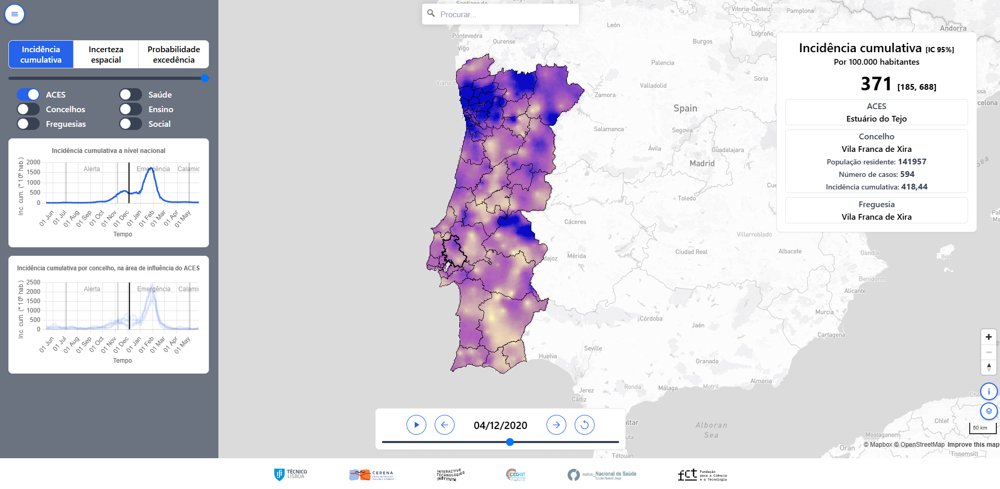
2. Métodos
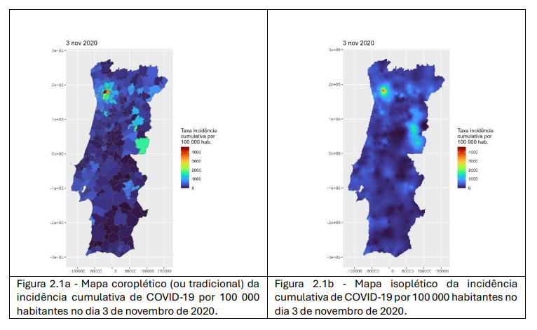
2.1. Dados de entrada
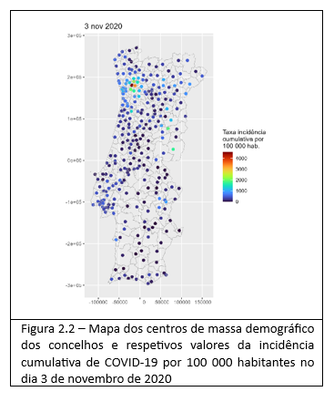
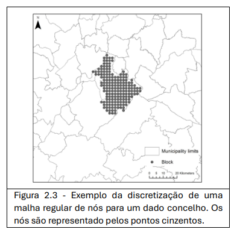
2.2. Correlação espacial
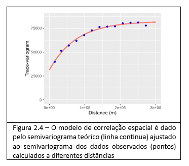
3. Simulação Sequencial Directa por Blocos
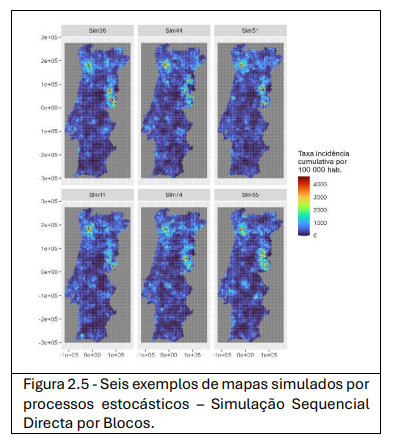
3.1. Mapas de incidência e quantificação da incerteza espacial
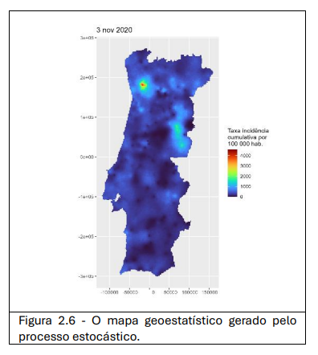
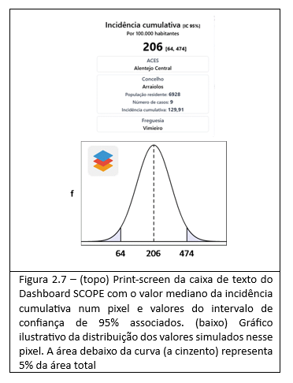
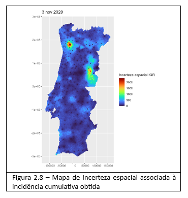
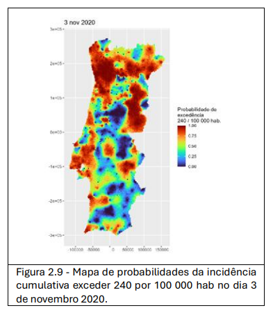
4. Navegação
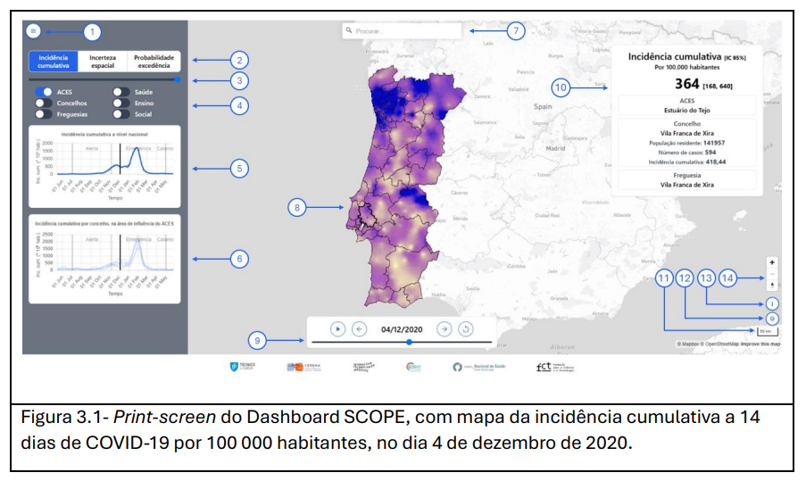
| ID | Nome funcionalidade | Descrição |
|---|---|---|
| 1 | Ocultar/mostrar menu | Ferramenta que permite alternar entre ocultar e exibir o menu lateral. Quando ocultado aumenta a área de visualização do mapa. |
| 2 | Selector de mapa |
Pode selecionar um dos três tipos de mapa: Incidência cumulativa – O valor em cada pixel representa a incidência mediana diária de COVID-19 por 100 000 habitantes; Incerteza espacial – Em cada pixel, corresponde ao valor da amplitude interquartil (diferença entre valores nos percentis 75 e 25 da distribuição dos valores simulados no pixel); Probabilidade de excedência – Representa probabilidade conjunta (i.e. de todos os pixéis) excederem um valor de corte especificado (240/100 000 habitantes). |
| 3 | Controlo deslizante transparência | Serve para ajustar a transparência do mapa, deslizando o botão para a esquerda (mais transparência) ou para a direita (menos transparência). |
| 4 | Selectores de camadas temáticas | Permite visualizar no mapa os limites dos ACES, Concelhos e Freguesias, e a localização de equipamentos (Sociais, de Saúde e de Ensino) podendo combinar várias camadas em simultâneo. |
| 5 | Gráfico da curva epidémica | Apresenta a curva de evolução temporal, em dias, da distribuição da incidência cumulativa de COVID-19 em Portugal durante o período analisado. A barra preta vertical encontra-se posicionada no dia a que se refere o mapa ativo. |
| 6 | Gráfico da curva epidémica por ACES | Apresenta as curvas de evolução temporal da incidência cumulativa de COVID-19 nos concelhos abrangidos pelo ACES selecionado. Para visualizar as curvas dos municípios abrangidos por um ACES específico, é necessário clicar com o cursor no mapa em cima do ACES desejado. |
| 7 | Procurar localidade | Caixa de pesquisa para localizar e recentrar o mapa numa localidade |
| 8 | Mapa | Pode visualizar qualquer dos mapas disponíveis no seletor de mapas, selecionando o mapa pretendido (ver 2.). |
| 9 | Controlotime lapse | Permite ver uma versão animada do mapa com visualização sequencial de mapas diários.
Permite visualizar a dinâmica espacial e temporal do mapa usando os botões disponíveis: 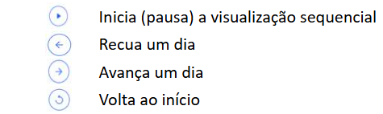 A data indicada no centro do controlo indica o dia que está a ser visualizado. |
| 10 | Caixa texto com valor da medida por pixel | Dá informação, para um pixel (onde se encontra posicionado o cursor do rato) e dia específico: - valor da medida no pixel; - nome do ACES, Município e Freguesia a que pertence o pixel. Quando o tipo de mapa selecionado é o da incidência cumulativa fornece as seguintes informações adicionais: - intervalo de confiança a 95% para o valor da incidência; - valor da incidência cumulativa no concelho a que pertence o pixel. |
| 11 | Escala gráfica | Representa as distâncias no mapa, ajustando-se conforme o zoom. |
| 12 | Ocultar/mostrar manual | Ferramenta que permite alternar entre ocultar e exibir o manual de utilização. Quando ocultado aumenta a área de visualização do mapa. |
| 13 | Ocultar/mostrar legenda do mapa | Ferramenta que permite alternar entre ocultar e exibir a legenda de cores do mapa selecionado. Quando ocultado aumenta a área de visualização do mapa. |
| 14 | Zoom in/out | Ferramenta para aproximar (+) ou afastar (-) o mapa e ajustar a visualização conforme necessário. Em alternativa, pode usar a roda do rato rodando-a para a frente (+) ou para trás (-). |
5. Metadados
| Título | Descrição | Ano | Fonte |
|---|---|---|---|
| Casos COVID-19 | Os dados relativos à COVID-19 utilizados para a construção desta ferramenta não são de acesso público, mas podem ser obtidos através do SINAVE (Sistema Nacional de Vigilância Epidemiológica), que regista todos os novos casos confirmados de infeção provocada pelo vírus SARS-CoV-2 (detetados via PCR e RAT). Os dados foram usados sob licença e fornecidos pela Direcção-Geral de Saúde (DGS) após assinatura de um acordo de confidencialidade e privacidade no âmbito do Artigo 39º do Decreto-Lei 2-B/2020, de 2 de abril 2020. | 2020 | DGS |
| Estimativa da População residente | População residente (N.º) por Local de residência (NUTS - 2013), Sexo e Grupo etário (quinquenais). | 2020 | INE |
| Equipamentos de Saúde | Conjunto das Unidades hospitalares e Unidades funcionais dos ACES. Dados extraídos, respetivamente, a partir das seguintes fontes: https://www.sns.gov.pt/institucional/entidades-de-saude/ https://bicsp.min-saude.pt/Paginas/default.aspx |
2021-2024 | INSA |
| Equipamentos de Ensino | Localização e tipologia dos estabelecimentos de ensino extraídos da base de dadoshttps://www.openstreetmap.org/ | 2024 | OpenStreetMap |
| Equipamentos Sociais | Localização e tipologia de equipamentos sociais extraídos da base de dadoshttps://www.openstreetmap.org/ | 2024 | OpenStreetMap |
| Toponímia - OpenStreetMap | Nome de localidades, ruas e outros topónimos extraídos da base de dadoshttps://www.openstreetmap.org/ | 2024 | OpenStreetMap |
[1] Os dados disponíveis neste dashboard referem-se apenas ao período entre 15 Mai 20 e 25 Mai 21.